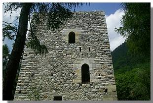

Da
Chiuro parte la strada panoramica dei Castelli, che sale verso Castionetto
(m. 561), proseguendo poi per Teglio. A Castionetto stacchiamocene sulla
sinistra, salendo verso Dalico. Poco oltre le ultime case del paese
(contrada Maffina), sulla nostra sinistra (cioè a valle rispetto
alla strada), raggiungiamo la bella torre medievale (m. 689). Si tratta
di una torre edificata in un periodo compreso fra il XII ed il XIV secolo,
che appartenne alla famiglia ghibellina dei Quadrio. La sua mole è
di tutto rispetto: ha una pianta quadrata, di 11 metri per lato, uno
spessore della cinta muraria che supera, alla base, i due metri, ed
una porta dÿaccesso rialzata di oltre tre metri rispetto al livello
del terreno (per raggiungerla ci si serviva di un ponte levatoio). Un
recente restauro lÿha restituita allÿantica bellezza, ma
ha anche cancellato i segni di una vicenda misteriosa di cui è
stata teatro.
Prima del restauro, sul lato destro della facciata dÿingresso
si poteva osservare, nella parte bassa dello spigolo, un evidente squarcio,
che ha scatenato la fantasia popolare. Sì, perché quello
spigolo così visibilmente scalfito doveva rimandare a qualche
evento portentoso. Se a questa presunzione si aggiunge che gli antichi
signori legati a questa torre furono i Quadrio, che erano ghibellini,
quindi avversari del primato papale, allora la vicenda misteriosa prende
corpo.
Dopo
che la torre fu abbandonata dagli uomini, vi si insediò, raccontano,
un diavolo, la cui mole ragguardevole incuteva timore a tutti. A tutti
tranne che ad un gruppo di intrepidi, che vollero vederci chiaro e guardare
in faccia questo temutissimo diavolo. Costoro salirono quindi, un giorno,
alla torre, determinati a verificare se il diavolo fosse così
brutto come lo dipingevano. Ma del diavolo sembrava non esserci neppure
lÿombra. Quandÿecco che, improvviso, si udì un rumore,
che proveniva dallÿinterno delle mura: era proprio il diavolo,
che non era affatto coraggioso, come si poteva pensare, ma se ne stava
nascosto, per la paura, dentro la torre.
Avendo compreso che era stato scoperto, si precipitò fuori dalle
mura, e, preso dal panico, si mise a correre allÿimpazzata, sbattendo,
con il naso, contro lo spigolo della torre, che fu sgretolato dallÿurto.
Gli uomini si misero a rincorrerlo, e questi, allora, per porsi in salvo,
pensò bene di rientrare nella torre. La sua paura aumentava il
coraggio dei cacciatori, che presero a lanciargli contro delle pietre,
fino a riempire interamente il piano terra della fortezza. Mentre piovevano
le pietre, il diavolo tentò lÿultima carta per salvarsi:
cominciò a scavare come un forsennato, ed in breve scavò
una gallerie profonda, appena in tempo per evitare di finire sepolto
dai sassi. La galleria usciva dal cuore della terra in località
Castelasc: da qui fuggì, e di lui si persero le tracce, perché
non apparve più in quei luoghi.
Dal
diavolo allÿacqua santa: i misteri di Castionetto non finiscono
qui, perché si racconta anche unÿaltra leggenda, legata
però, questa volta, alle potenze celesti. Salendo verso Castionetto,
appena prima del cimitero, troviamo una deviazione a destra che porta
alla chiesa parrocchiale di San Bartolomeo, edificata nei secoli XII
e XIII e ricostruita nel secolo XVIII. Fin qui la storia. Una leggenda
spiega la ragione del luogo scelto per erigere lÿedificio sacro.
Lÿidea originaria, infatti, era di costruire la chiesa più
a monte, e così si iniziò a fare.
Senonché, con grande sorpresa di tutti, il mattino al primo giorno
di lavori si constatò che tutto il lavoro del giorno precedente
era stato, in apparenza, cancellato. Guardando bene, però, si
scoprì che tale lavoro non era svanito nel nulla, ma lo si ritrovava
più a valle. E così andò avanti per diversi giorni.
Che ci fosse di mezzo lo zampino del diavolo? No, questa volta era stata
la mano di Dio ad intervenire, per far comprendere agli uomini quale
fosse la posizione in cui voleva che la chiesa fosse edificata. Compreso
ciò, fu rispettata la volontà di Dio, e la chiesa sorse
più a valle, dove la possiamo ancora oggi vedere. Possiamo trovare
queste due leggende nel bel volume intitolato ´Chiuro¡,
curato da Franco Monteforte ed Ellida Faccinelli ed edito dalla Biblioteca
comunale ´Luigi Faccinelli¡ di Chiuro nel 1989.
Non possiamo concludere questa breve rassegna sui misteri di Castionetto
senza menzionare la figura più paurosa. Si tratta di una strega,
la Marcolfa, che si diceva vivesse in una grotta, dalla quale usciva
per aggirarsi, silenziosa e terribile, dopo la mezzanotte, pronta a
ghermire i malcapitati. In particolare, una volta prese di mira una
filatrice, che si era attardata a filare la lana oltre la mezzanotte
del sabato. Di domenica, si sa, non si lavora, ma la filatrice era troppo
presa dal lavoro che doveva terminare, per rispettare il precetto festivo.
La
Marcolfa si appostò fuori della sua finestra, pronunciò
una frase che suonava come un sinistro sortilegio e, quando la malcapitata,
presa da un inquietante presentimento, si affacciò all'uscio,
l'afferrò prontamente e se la portò via. Della filatrice
non si seppe più nulla.
I motivi per una visita a Castionetto, dunque non mancano. Aggiungiamone
uno: la possibilità di compiere interessantissime escursioni,
ed in particolare un elegante anello che ci porta a visitare la luminosa
Costa di San Gaetano. Visitata la torre di Castionetto, dunque, proseguiamo
con lÿautomobile fino alle prime baite di Dalico (m. 1350). Qui
la strada effettua una diagonale verso destra, fino al punto in cui
termina lÿasfalto: lasciamo qui lÿautomobile e proseguiamo
oltrepassando i prati più alti della località, in una
cornice che, ad autunno inoltrato, è di rara suggestione. Dopo
mezzora, o poco più, di cammino, raggiungiamo la chiesetta di
san Gaetano (m. 1550), un gioiellino incastonato in uno splendido scenario
naturale, meta, un tempo, di una caratteristica processione annuale,
che prevedeva la distribuzione, lungo il percorso, di pane, vino e latte.
La strada sale ancora, fino allÿultima baita della località
Prepatèl (m. 1699). Proprio alle spalle della baita parte un
sentierino, poco marcato, che sale, ripido, lungo il dosso, attraversando
dapprima una selva, uscendo poi in terreno aperto, fino a guadagnarne
la cima (m. 1777), dove si trova unÿasta metallica, che costituisce
un prezioso punto di riferimento per chi volesse percorrere in senso
inverso questo itinerario. Inizia ora la lunga risalita della Costa
di San Gaetano, brullo, ampio e luminoso crinale che separa la Val Fontana
dalla minore val Rogna. Salendo
senza percorso obbligato, raggiungiamo la cima della costa, al culmine
del dosso quotato 2283 metri.
Siamo in cammino da circa due ore e mezza: se abbiamo ancora tempo ed
energie da spendere, possiamo compiere una traversata verso le piste
di sci di prato Valentino, scendendo ad un sentiero di mezza costa (Viale
della Formica), oppure alla bocchetta di quota 2269, dalla quale si
può attaccare il dosso successivo, quotato m. 2481 (facendo attenzione
ad alcuni tratti, un poÿ ripidi). Prima di effettuare la traversata,
però, gettiamo uno sguardo sul lato occidentale della Val Fontana:
possiamo osservare, da sinistra, vetta di Rhon (m. 3137), la cima Vicima
(m. 3123), la bocchetta di Vicima ed il pizzo Calino (m. 3024).
Se scegliamo la soluzione più lunga, ci ritroviamo sulla strada
che conduce alla cabina, che funge anche da bivacco, posta al termine
degli impianti di risalita, e che rimane nascosta dietro un ultimo piccolo
dosso. Poco oltre, sulla sinistra, scorgiamo la cima erbosa del monte
Brione (m. 2542): per raggiungerla basta una decina di minuti di cammino.
Se, invece, scegliamo il Viale della Formica, ci ritroviamo ad un casello
dellÿacqua, a poca distanza dal più grande edificio che
serve gli impianti. In entrambi i casi, non ci resta che scendere, seguendo
la comoda strada, fino a Prato Valentino (m. 1720), dove troviamo la
chiesetta dedicata al santo caro agli innamorati.
Esistono due varianti più brevi che permettono di effettuare
la traversata della valle della Rogna. Dalla
baita di Prepatèl, invece di imboccare il sentierino che sale
alla parte alta dei prati, dirigiamoci, senza guadagnare quota, verso
destra, tagliando orizzontalmente i prati ad est dellÿedificio.
Troveremo una debole traccia di sentiero, che intercetta una più
marcata traccia che sale da destra.
Si offrono ora due possibilità: se proseguiamo diritti, seguendo
le indicazioni di un segnavia su un masso, effettuiamo una traversata
che rimane in buona parte nel bosco e, mantenendo una quota approssimativamente
costante, porta al limite occidentale di Prato Valentino: si tratta
di un segmento del Sentiero
Italia.
Se, invece, al bivio proseguiamo verso sinistra, iniziamo una lunga
salita in diagonale, su terreno aperto, lungo il fianco occidentale
della val Rogna. La traccia si fa sempre più debole, fino a quasi
scomparire, ma quando ci sembra di averla persa, scopriamo, pochi metri
più a monte, una nuova e marcata traccia, che raggiunge il cuore
della valle, portandoci sul lato opposto. La traccia diventa quindi
una pista che raggiunge la sterrata che da Prato Valentino sale lungo
gli impianti di risalita. Percorrendo la sterrata in discesa, in breve
raggiungiamo Prato Valentino.
Da qui parte la strada asfaltata che scende a Teglio. Seguiamola fino
al primo tornante sinistrorso (m. 1608), dove parte un tratturo che
se ne stacca sulla destra, scendendo, ripido, fino ai prati di Verdomana
(m. 1521). Scendiamo alla croce, gustando lÿincommensurabile bellezza
degli scenari: intercettiamo, qui, il
Sentiero del Sole (segnalato da un cartello).
Percorriamolo
verso destra (ovest), approssimandoci di nuovo, questa volta da est
ad ovest, al solco della val Rogna che, a dispetto del nome, appare
qui tuttÿaltro che inquietante o sinistra. Attraversato il magro
torrentello della valle, ci ritroviamo su un sentierino, segnalato da
segnavia bianco-rossi, che ci riporta a Dalico. Raggiunta una baita,
possiamo scendere direttamente verso lÿautomobile sfruttando una
strada sterrata alla nostra sinistra, oppure continuare sul Sentiero
del Sole, che attraversa questo bosco e ci riporta ai prati alti di
Dalico, dai quali scendiamo, seguendo la strada, allÿautomobile.
Sono trascorse circa sei-sette ore dalla partenza: una bella giornata
primaverile o autunnale può renderle semplicemente indimenticabili.